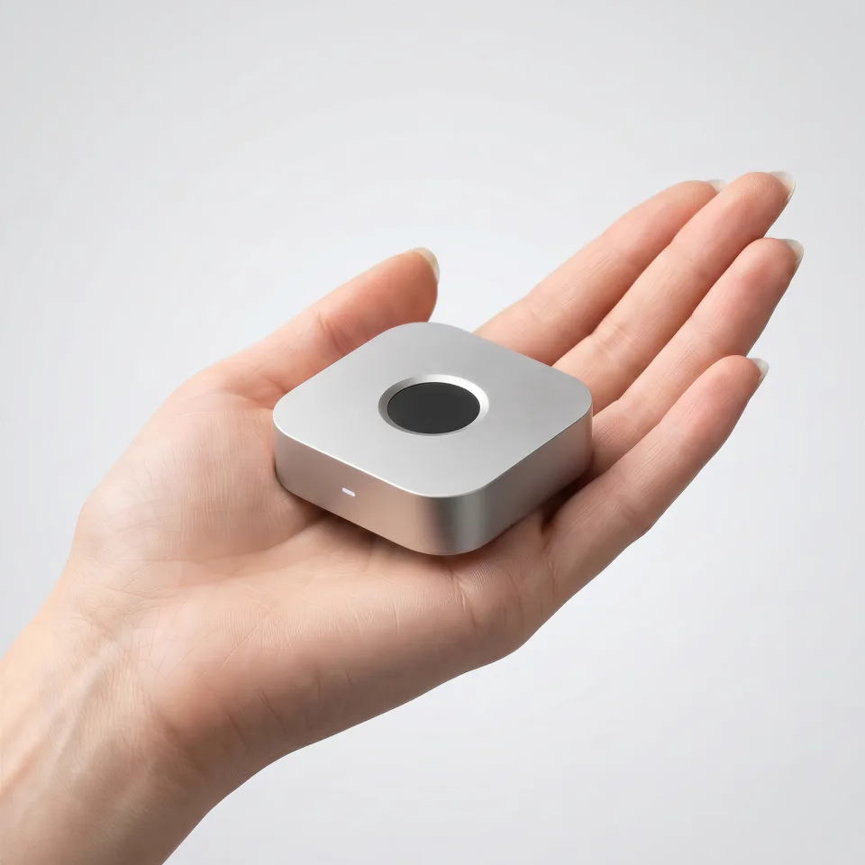

One touch. Unlocked.
The premium wireless fingerprint key for all.
Screen unlock, sudo, admin prompts, and SSH signing, approved by the finger already on your desk. Built for Mac, Windows, and major Linux distro.
Pre-orders open. Ships December 2026. One-year warranty.
Problem
Biometrics on modern computers are fragmented, hardware-locked, or missing.
Millions of developers have no fingerprint option at all.
They just type passwords. Every. Single. Time.
So we built the missing piece: a small wireless fingerprint key that handles unlock, sudo/admin, and SSH. On any Mac, any Windows, any Linux.
Everything You Need
Built for Security, Performance and Simplicity.
Screen Unlock
Lock screen → touch → unlocked. Works with Mac mini, clamshell MacBooks, Windows PCs, and Linux.
SSH & Git signing
Push commits signed with your fingerprint. On-device ECDSA private keys.
sudo & PAM
Replace sudo and admin passwords with a fingerprint touch. PAM integration on macOS and Linux, Credential Provider integration on Windows.
App Store & Password App
A fingerprint touch signs you into the App Store and unlocks Apple's built-in Passwords app, no need to type your Apple ID or master password.
3rd Party Apps Unlock
Auto-fill and unlock 1Password, Bitwarden, LastPass and more, plus any app you whitelist yourself, across macOS, Windows & Linux.
Open-source app
macOS, Windows & Linux apps are open source on GitHub (Apache 2.0). Audit it yourself.


One Touch to Approve Your AI Agent
Coding agents want sudo, git push, and your API keys. immurok makes your fingerprint the human-in-the-loop.

$ imk run --agent -- git push origin main
→ waiting for fingerprint…
✓ approved · push proceeding- The overlay shows the verbatim command the agent wants to run. No summaries, no paraphrase.
- One touch approves sudo, SSH signing, and secret reads for that single subprocess.
- Dismiss the overlay and the command is killed. Walk away from the desk and the agent can't act.
- Secrets are injected into the child process only, so they never enter the agent's transcript.
Works with Every Mac, Windows PC & All Major Linux Distros
macOS 13.0 or later as a single universal build for Apple Silicon and Intel. Windows 10 and 11 with native x64 and Arm64 installers, integrated through a Credential Provider so it works on the lock screen. Linux as a Rust daemon with PAM and polkit integration, tested on Ubuntu, Fedora, Arch and Debian. The key is a separate Bluetooth device, so a Mac mini, a Mac Studio, an iMac, a clamshell MacBook, an external keyboard and a desktop PC all work the same way.
Linux distributions
Why Immurok
The only standalone wireless fingerprint authenticator for Mac, Windows, and Linux. A standalone alternative to Touch ID that works with any keyboard, on any OS.
| Feature |
|
Magic Keyboard Touch ID: $199 | USB dongles Various |
|---|---|---|---|
| Mac mini / Mac Studio | |||
| Clamshell mode | |||
| Linux support | |||
| Windows support | |||
| Wireless | |||
| SSH Agent | |||
| sudo / PAM | |||
| Standalone (no keyboard) | |||
| Source-available | |||
| Price | US$69 | $199 | Various |
Security by Design
Your biometric data never leaves the device. No cloud. No account. No telemetry.
Private keys never leave the device
Fingerprint templates and crypto keys are stored on the device. Nothing is transmitted or stored on your computer.
No cloud. No account. No telemetry.
Zero network calls. Zero analytics. Works entirely offline via Bluetooth, no internet required.
ECDH pairing + signed firmware
ECDH P-256 key exchange for secure pairing. OTA firmware updates are cryptographically verified.
Source code ready for audit
macOS, Windows & Linux apps are open source on GitHub under Apache 2.0. Audit it yourself or have your security team review it.
Get Yours

Pre-order · New batch ships December 2026
immurok IK-1
US$69 Shipping calculated at checkout. Import duties not included.
One payment. No subscription, no account.
- One-year warranty
- Free firmware updates
- Secure checkout by Shopify
A standalone fingerprint key for your desk. One touch unlocks your Mac, Windows or Linux machine, approves sudo and admin prompts, signs SSH and Git, and unlocks 1Password or Bitwarden.
Specifications
| Connectivity | Bluetooth LE, pairs with 2 computers |
| Sensor | Capacitive fingerprint, <500 ms match |
| Battery | 110 mAh LiPo, USB-C, 1+ month per charge |
| Body | CNC aluminum, anodized |
| Size | 44 × 44 × 14.2 mm, ~40 g |
| Works with | macOS 13+, Windows 10/11, major Linux distros |
What's in the box
- immurok IK-1, Silver
- User manual
Import duties, VAT and any local customs charges are the recipient's responsibility. Already ordered? Check your order status.
For Developers
Source-available, well-documented API. Build your own integrations.

Menu bar app + PAM integration
Service + Credential Provider integration

Daemon + PAM integration

PAM module for sudo & login

Full protocol docs for custom clients
FAQ
Which computers and operating systems does it work with?
macOS 13.0 or later, Windows 10 and 11, and most Linux distributions. The Mac app is a single universal build for Apple Silicon and Intel. Windows has native x64 and Arm64 installers and integrates through a Credential Provider, so it works on the lock screen. Linux is a Rust daemon with PAM and polkit integration, tested on Ubuntu, Fedora, Arch and Debian, and it builds on most other distributions. Because the key is a separate Bluetooth device rather than a sensor built into a laptop, it works the same on a Mac mini, a Mac Studio, an iMac, a clamshell MacBook, an external keyboard, or a desktop PC. One device can be bound to two computers at once and switched between them with a dedicated fingerprint.
Does it work with Windows Hello?
It is not a Windows Hello device, and it does not need to be. Windows Hello is Microsoft’s framework for sensors built into a laptop or a certified keyboard or webcam. immurok signs you in by a different route: a Credential Provider that runs inside the Windows sign-in screen, so a touch unlocks the lock screen exactly as a Hello sensor would, on any desktop PC or external keyboard where no Hello sensor exists. Then it goes further than Hello. The same touch signs SSH and Git commits, unlocks 1Password and Bitwarden and releases TOTP codes, and the same key also works on macOS and Linux.
Does it support passkeys or FIDO?
No. immurok is not a FIDO device. It does not register with websites as a passkey or a security key, and it does not replace a YubiKey. It works one layer down, on the machine in front of you: screen unlock, sudo and admin prompts, SSH and Git signing, password-manager unlock and TOTP codes. Keep your passkeys or security key for signing in to websites; immurok takes care of the rest, and many of us use both.
Does it support ChromeOS?
No. ChromeOS gives third-party software no way to take part in screen unlock or system authentication, so there is nothing for immurok to hook into. It works with macOS 13 or later, Windows 10 and 11, and most Linux distributions.
Can I use one key with more than one computer?
Yes, with up to two computers, connected to one at a time. The key keeps two independent pairings, each with its own keys, so both machines stay bound to it, but it talks to only one of them at any moment. You enrol one finger as the switch finger. Touching it hands the key from one computer to the other, and the target computer reconnects on its own. Removing one computer clears only that pairing; the other computer and your enrolled fingerprints are untouched.
Does it unlock 1Password, Bitwarden, LastPass or Proton Pass?
Yes, all four, on macOS, Windows and Linux. When the manager shows its unlock prompt, a touch fills in a dedicated password that lives on the key, stored separately from your login password and switched on separately, and submits it. Only apps on a signed allowlist ever receive it.
Can I connect it over USB?
Only to charge it. The USB-C port charges the battery and carries no data. Pairing, fingerprint results and everything else go over Bluetooth LE, so your computer needs Bluetooth and the key needs no free port while you work.
Is the battery replaceable?
Yes. The key runs on a rechargeable 110 mAh lithium cell that charges over USB-C and lasts more than a month of normal use per charge. It is a standard off-the-shelf size, not a custom part, and you can swap it yourself. Unpair or factory-reset the key first: opening the case of a paired key trips the tamper switch and wipes it. Swap the cell, close the case and pair again.
How secure is it? Where do my fingerprints live?
On the device, and nowhere else. Fingerprint templates are stored and matched on the key itself. They never reach your computer's disk, the network, or any cloud service. What crosses Bluetooth is an HMAC-signed “match succeeded” notification, never the fingerprint. Pairing is a direct ECDH exchange between the device and your machine. Firmware updates are signed and verified before they are installed. There is no account, no server and no telemetry, so everything works offline and keeps working if we disappear.
Is it open source?
All the source code is public on GitHub, under two different licences. The macOS, Windows and Linux apps, including the PAM modules and the Windows Credential Provider, are open source under Apache 2.0. The firmware and hardware are source-available under BSL 1.1 and convert to Apache 2.0 in 2030. You can read all of it, patch it, and build and flash your own unit. The only right reserved until conversion is selling competing hardware. We would rather state that precisely than stretch the word. Everything is at github.com/immurok.
Can I build and flash my own firmware?
Yes. The firmware and hardware sources are public, and the PCB exposes a programming interface so you can build your own firmware and flash it. Reset the key before you open it, because opening a paired key trips the tamper switch. Once a unit runs firmware you built, it is out of warranty and no longer receives official firmware updates.
How is this different from a YubiKey, a password manager, or Touch ID?
Different layer, and they work together. A YubiKey and passkeys prove who you are to a website. immurok removes password friction on the machine in front of you: screen unlock, sudo, admin prompts, SSH and Git signing. A password manager stores your passwords; immurok unlocks 1Password and Bitwarden with a touch on macOS, Windows and Linux, and holds TOTP secrets on the device so your 2FA seeds are not sitting in a desktop app. Touch ID is Apple's own sensor, fused to the Secure Enclave and closed to third parties, and it simply does not exist on a Mac mini or an external keyboard. immurok is an independent device: sudo and admin prompts go through PAM, a real system mechanism, and screen unlock uses a separately documented helper path. Most of us use a YubiKey and a password manager too.
Is there a standalone Touch ID for the Mac?
Not from Apple. Touch ID only ships built into MacBooks and the Magic Keyboard with Touch ID, which costs US$149 to US$199, needs an Apple Silicon Mac, and ties the sensor to a keyboard you may not want. There is no standalone Touch ID sensor, and because Touch ID is fused to the Secure Enclave, a third party cannot make one. immurok is the closest thing: a standalone wireless fingerprint key that sits on your desk next to whatever keyboard you already use. On a Mac mini, Mac Studio, iMac or clamshell MacBook it unlocks the screen, approves sudo and admin prompts, unlocks 1Password and Bitwarden, and signs SSH and Git commits. It is not Touch ID and does not pretend to be: it is a separate device with its own sensor and its own security model, and it works on Windows and Linux too.
Is there a subscription?
No. No subscription, no account, no cloud service. You pay once for the device. The macOS, Windows and Linux apps are free, and so are firmware updates. Nothing stops working if you never connect the device to the internet, because it never needs to.
How do I reset it, and what if I lose it?
Hold the button for about ten seconds to factory reset. The device erases everything, pairing keys, every enrolled fingerprint and any stored credentials, then restarts ready to pair again. That cannot be undone. To move the key to another computer without a full reset, choose Unpair in the app. If you lose the device, your fingerprints cannot be extracted from it: templates never leave the hardware, and forcing the case open trips a tamper switch that wipes everything and leaves the light steady red. Every unit includes a one-year warranty. For help, use the support address printed in the user manual and shown in the app, or email support.
Also answered in 日本語, Español, Português, Deutsch, 한국어, Русский, Nederlands, Polski, Bahasa Indonesia, 简体中文, 繁體中文.